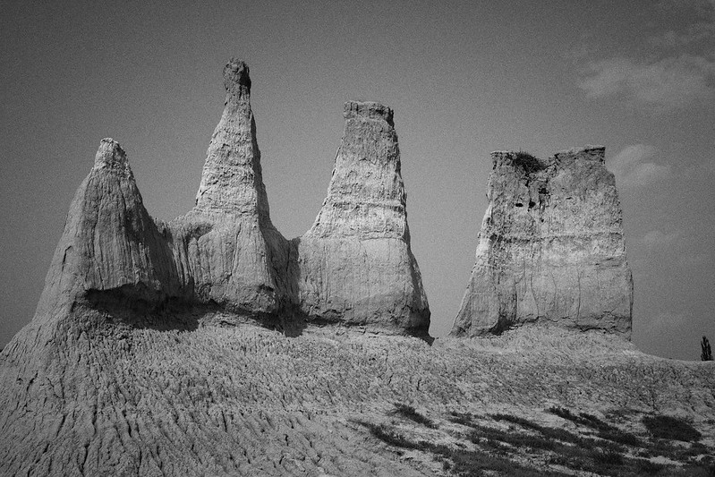
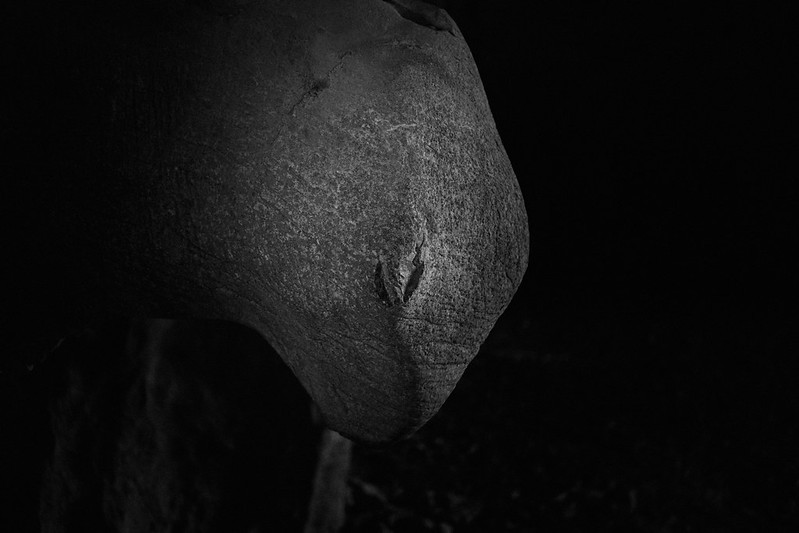
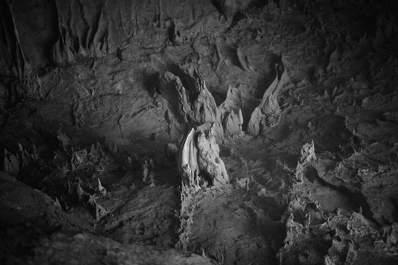

Karst

Karst 3: Earth Forest
This is a visual poem composed of humans, earth forests, flowers, and dead mice. Sometimes they are grotesque and terrifying, sometimes they softly weep, and at other times, they are filled with warmth and hope.
Shanxi, 2024 - Flickr

Karst 2
Our planet utilizes water and time as its carving tools, sculpting a magical and incredible world in the pitch-black underground caverns. Nature is the greatest artist.
Guangdong, 2022 - Flickr

Karst 1
In the southern Chinese province of Guizhou, there is a magical forest known locally as the "Funnel Forest." In addition to Karst caves and various rare plants and animals, it also contains relics of ancient human activity. I took these photos during two separate hikes through the forest.
Guizhou, 2018 - Flickr